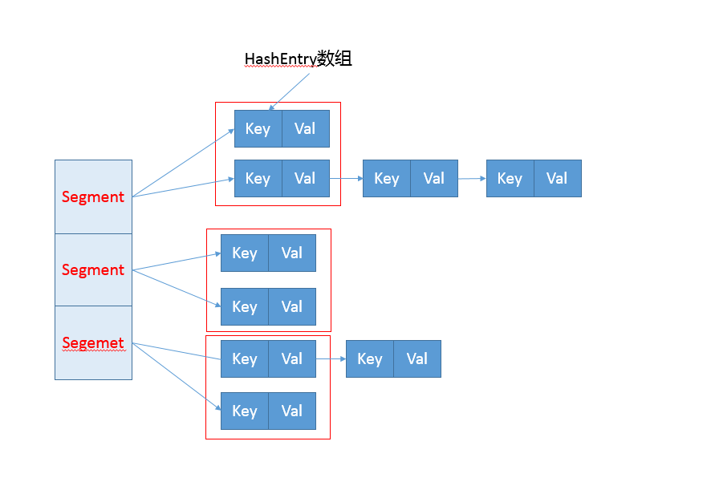

- 00 开篇词 以面试题为切入点，有效提升你的Java内功.md.html
- 01 谈谈你对Java平台的理解？.md.html
- 02 Exception和Error有什么区别？.md.html
- 03 谈谈final、finally、 finalize有什么不同？.md.html
- 04 强引用、软引用、弱引用、幻象引用有什么区别？.md.html
- 05 String、StringBuffer、StringBuilder有什么区别？.md.html
- 06 动态代理是基于什么原理？.md.html
- 07 int和Integer有什么区别？.md.html
- 08 对比Vector、ArrayList、LinkedList有何区别？.md.html
- 09 对比Hashtable、HashMap、TreeMap有什么不同？.md.html
- 10 如何保证集合是线程安全的_ ConcurrentHashMap如何实现高效地线程安全？.md.html
- 11 Java提供了哪些IO方式？ NIO如何实现多路复用？.md.html
- 12 Java有几种文件拷贝方式？哪一种最高效？.md.html
- 13 谈谈接口和抽象类有什么区别？.md.html
- 14 谈谈你知道的设计模式？.md.html
- 15 synchronized和ReentrantLock有什么区别呢？.md.html
- 16 synchronized底层如何实现？什么是锁的升级、降级？.md.html
- 17 一个线程两次调用start()方法会出现什么情况？.md.html
- 18 什么情况下Java程序会产生死锁？如何定位、修复？.md.html
- 19 Java并发包提供了哪些并发工具类？.md.html
- 20 并发包中的ConcurrentLinkedQueue和LinkedBlockingQueue有什么区别？.md.html
- 21 Java并发类库提供的线程池有哪几种？ 分别有什么特点？.md.html
- 22 AtomicInteger底层实现原理是什么？如何在自己的产品代码中应用CAS操作？.md.html
- 23 请介绍类加载过程，什么是双亲委派模型？.md.html
- 24 有哪些方法可以在运行时动态生成一个Java类？.md.html
- 25 谈谈JVM内存区域的划分，哪些区域可能发生OutOfMemoryError_.md.html
- 26 如何监控和诊断JVM堆内和堆外内存使用？.md.html
- 27 Java常见的垃圾收集器有哪些？.md.html
- 28 谈谈你的GC调优思路_.md.html
- 29 Java内存模型中的happen-before是什么？.md.html
- 30 Java程序运行在Docker等容器环境有哪些新问题？.md.html
- 31 你了解Java应用开发中的注入攻击吗？.md.html
- 32 如何写出安全的Java代码？.md.html
- 33 后台服务出现明显“变慢”，谈谈你的诊断思路？.md.html
- 34 有人说“Lambda能让Java程序慢30倍”，你怎么看？.md.html
- 35 JVM优化Java代码时都做了什么？.md.html
- 36 谈谈MySQL支持的事务隔离级别，以及悲观锁和乐观锁的原理和应用场景？.md.html
- 37 谈谈Spring Bean的生命周期和作用域？.md.html
- 38 对比Java标准NIO类库，你知道Netty是如何实现更高性能的吗？.md.html
- 39 谈谈常用的分布式ID的设计方案？Snowflake是否受冬令时切换影响？.md.html
- 周末福利 谈谈我对Java学习和面试的看法.md.html
- 结束语 技术没有终点.md.html
- 捐赠
10 如何保证集合是线程安全的_ ConcurrentHashMap如何实现高效地线程安全？
我在之前两讲介绍了Java集合框架的典型容器类，它们绝大部分都不是线程安全的，仅有的线程安全实现，比如Vector、Stack，在性能方面也远不尽如人意。幸好Java语言提供了并发包（java.util.concurrent），为高度并发需求提供了更加全面的工具支持。
今天我要问你的问题是，如何保证容器是线程安全的？ConcurrentHashMap如何实现高效地线程安全？
典型回答
Java提供了不同层面的线程安全支持。在传统集合框架内部，除了Hashtable等同步容器，还提供了所谓的同步包装器（Synchronized Wrapper），我们可以调用Collections工具类提供的包装方法，来获取一个同步的包装容器（如Collections.synchronizedMap），但是它们都是利用非常粗粒度的同步方式，在高并发情况下，性能比较低下。
另外，更加普遍的选择是利用并发包提供的线程安全容器类，它提供了：
各种并发容器，比如ConcurrentHashMap、CopyOnWriteArrayList。
各种线程安全队列（Queue/Deque），如ArrayBlockingQueue、SynchronousQueue。
各种有序容器的线程安全版本等。
具体保证线程安全的方式，包括有从简单的synchronize方式，到基于更加精细化的，比如基于分离锁实现的ConcurrentHashMap等并发实现等。具体选择要看开发的场景需求，总体来说，并发包内提供的容器通用场景，远优于早期的简单同步实现。
考点分析
谈到线程安全和并发，可以说是Java面试中必考的考点，我上面给出的回答是一个相对宽泛的总结，而且ConcurrentHashMap等并发容器实现也在不断演进，不能一概而论。
如果要深入思考并回答这个问题及其扩展方面，至少需要：
理解基本的线程安全工具。
理解传统集合框架并发编程中Map存在的问题，清楚简单同步方式的不足。
梳理并发包内，尤其是ConcurrentHashMap采取了哪些方法来提高并发表现。
最好能够掌握ConcurrentHashMap自身的演进，目前的很多分析资料还是基于其早期版本。
今天我主要是延续专栏之前两讲的内容，重点解读经常被同时考察的HashMap和ConcurrentHashMap。今天这一讲并不是对并发方面的全面梳理，毕竟这也不是专栏一讲可以介绍完整的，算是个开胃菜吧，类似CAS等更加底层的机制，后面会在Java进阶模块中的并发主题有更加系统的介绍。
知识扩展
- 为什么需要ConcurrentHashMap？
Hashtable本身比较低效，因为它的实现基本就是将put、get、size等各种方法加上“synchronized”。简单来说，这就导致了所有并发操作都要竞争同一把锁，一个线程在进行同步操作时，其他线程只能等待，大大降低了并发操作的效率。
前面已经提过HashMap不是线程安全的，并发情况会导致类似CPU占用100%等一些问题，那么能不能利用Collections提供的同步包装器来解决问题呢？
看看下面的代码片段，我们发现同步包装器只是利用输入Map构造了另一个同步版本，所有操作虽然不再声明成为synchronized方法，但是还是利用了“this”作为互斥的mutex，没有真正意义上的改进！
private static class SynchronizedMap<K,V>
implements Map<K,V>, Serializable {
private final Map<K,V> m; // Backing Map
final Object mutex; // Object on which to synchronize
// …
public int size() {
synchronized (mutex) {return m.size();}
}
// …
}
所以，Hashtable或者同步包装版本，都只是适合在非高度并发的场景下。
- ConcurrentHashMap分析
我们再来看看ConcurrentHashMap是如何设计实现的，为什么它能大大提高并发效率。
首先，我这里强调，ConcurrentHashMap的设计实现其实一直在演化，比如在Java 8中就发生了非常大的变化（Java 7其实也有不少更新），所以，我这里将比较分析结构、实现机制等方面，对比不同版本的主要区别。
早期ConcurrentHashMap，其实现是基于：
分离锁，也就是将内部进行分段（Segment），里面则是HashEntry的数组，和HashMap类似，哈希相同的条目也是以链表形式存放。
HashEntry内部使用volatile的value字段来保证可见性，也利用了不可变对象的机制以改进利用Unsafe提供的底层能力，比如volatile access，去直接完成部分操作，以最优化性能，毕竟Unsafe中的很多操作都是JVM intrinsic优化过的。
你可以参考下面这个早期ConcurrentHashMap内部结构的示意图，其核心是利用分段设计，在进行并发操作的时候，只需要锁定相应段，这样就有效避免了类似Hashtable整体同步的问题，大大提高了性能。

在构造的时候，Segment的数量由所谓的concurrencyLevel决定，默认是16，也可以在相应构造函数直接指定。注意，Java需要它是2的幂数值，如果输入是类似15这种非幂值，会被自动调整到16之类2的幂数值。
具体情况，我们一起看看一些Map基本操作的源码，这是JDK 7比较新的get代码。针对具体的优化部分，为方便理解，我直接注释在代码段里，get操作需要保证的是可见性，所以并没有什么同步逻辑。
public V get(Object key) {
Segment<K,V> s; // manually integrate access methods to reduce overhead
HashEntry<K,V>[] tab;
int h = hash(key.hashCode());
//利用位操作替换普通数学运算
long u = (((h >>> segmentShift) & segmentMask) << SSHIFT) + SBASE;
// 以Segment为单位，进行定位
// 利用Unsafe直接进行volatile access
if ((s = (Segment<K,V>)UNSAFE.getObjectVolatile(segments, u)) != null &&
(tab = s.table) != null) {
//省略
}
return null;
}
而对于put操作，首先是通过二次哈希避免哈希冲突，然后以Unsafe调用方式，直接获取相应的Segment，然后进行线程安全的put操作：
public V put(K key, V value) {
Segment<K,V> s;
if (value == null)
throw new NullPointerException();
// 二次哈希，以保证数据的分散性，避免哈希冲突
int hash = hash(key.hashCode());
int j = (hash >>> segmentShift) & segmentMask;
if ((s = (Segment<K,V>)UNSAFE.getObject // nonvolatile; recheck
(segments, (j << SSHIFT) + SBASE)) == null) // in ensureSegment
s = ensureSegment(j);
return s.put(key, hash, value, false);
}
其核心逻辑实现在下面的内部方法中：
final V put(K key, int hash, V value, boolean onlyIfAbsent) {
// scanAndLockForPut会去查找是否有key相同Node
// 无论如何，确保获取锁
HashEntry<K,V> node = tryLock() ? null :
scanAndLockForPut(key, hash, value);
V oldValue;
try {
HashEntry<K,V>[] tab = table;
int index = (tab.length - 1) & hash;
HashEntry<K,V> first = entryAt(tab, index);
for (HashEntry<K,V> e = first;;) {
if (e != null) {
K k;
// 更新已有value...
}
else {
// 放置HashEntry到特定位置，如果超过阈值，进行rehash
// ...
}
}
} finally {
unlock();
}
return oldValue;
}
所以，从上面的源码清晰的看出，在进行并发写操作时：
ConcurrentHashMap会获取再入锁，以保证数据一致性，Segment本身就是基于ReentrantLock的扩展实现，所以，在并发修改期间，相应Segment是被锁定的。
在最初阶段，进行重复性的扫描，以确定相应key值是否已经在数组里面，进而决定是更新还是放置操作，你可以在代码里看到相应的注释。重复扫描、检测冲突是ConcurrentHashMap的常见技巧。
我在专栏上一讲介绍HashMap时，提到了可能发生的扩容问题，在ConcurrentHashMap中同样存在。不过有一个明显区别，就是它进行的不是整体的扩容，而是单独对Segment进行扩容，细节就不介绍了。
另外一个Map的size方法同样需要关注，它的实现涉及分离锁的一个副作用。
试想，如果不进行同步，简单的计算所有Segment的总值，可能会因为并发put，导致结果不准确，但是直接锁定所有Segment进行计算，就会变得非常昂贵。其实，分离锁也限制了Map的初始化等操作。
所以，ConcurrentHashMap的实现是通过重试机制（RETRIES_BEFORE_LOCK，指定重试次数2），来试图获得可靠值。如果没有监控到发生变化（通过对比Segment.modCount），就直接返回，否则获取锁进行操作。
下面我来对比一下，在Java 8和之后的版本中，ConcurrentHashMap发生了哪些变化呢？
总体结构上，它的内部存储变得和我在专栏上一讲介绍的HashMap结构非常相似，同样是大的桶（bucket）数组，然后内部也是一个个所谓的链表结构（bin），同步的粒度要更细致一些。
其内部仍然有Segment定义，但仅仅是为了保证序列化时的兼容性而已，不再有任何结构上的用处。
因为不再使用Segment，初始化操作大大简化，修改为lazy-load形式，这样可以有效避免初始开销，解决了老版本很多人抱怨的这一点。
数据存储利用volatile来保证可见性。
使用CAS等操作，在特定场景进行无锁并发操作。
使用Unsafe、LongAdder之类底层手段，进行极端情况的优化。
先看看现在的数据存储内部实现，我们可以发现Key是final的，因为在生命周期中，一个条目的Key发生变化是不可能的；与此同时val，则声明为volatile，以保证可见性。
static class Node<K,V> implements Map.Entry<K,V> {
final int hash;
final K key;
volatile V val;
volatile Node<K,V> next;
// …
}
我这里就不再介绍get方法和构造函数了，相对比较简单，直接看并发的put是如何实现的。
final V putVal(K key, V value, boolean onlyIfAbsent) { if (key == null || value == null) throw new NullPointerException();
int hash = spread(key.hashCode());
int binCount = 0;
for (Node<K,V>[] tab = table;;) {
Node<K,V> f; int n, i, fh; K fk; V fv;
if (tab == null || (n = tab.length) == 0)
tab = initTable();
else if ((f = tabAt(tab, i = (n - 1) & hash)) == null) {
// 利用CAS去进行无锁线程安全操作，如果bin是空的
if (casTabAt(tab, i, null, new Node<K,V>(hash, key, value)))
break;
}
else if ((fh = f.hash) == MOVED)
tab = helpTransfer(tab, f);
else if (onlyIfAbsent // 不加锁，进行检查
&& fh == hash
&& ((fk = f.key) == key || (fk != null && key.equals(fk)))
&& (fv = f.val) != null)
return fv;
else {
V oldVal = null;
synchronized (f) {
// 细粒度的同步修改操作...
}
}
// Bin超过阈值，进行树化
if (binCount != 0) {
if (binCount >= TREEIFY_THRESHOLD)
treeifyBin(tab, i);
if (oldVal != null)
return oldVal;
break;
}
}
}
addCount(1L, binCount);
return null;
}
初始化操作实现在initTable里面，这是一个典型的CAS使用场景，利用volatile的sizeCtl作为互斥手段：如果发现竞争性的初始化，就spin在那里，等待条件恢复；否则利用CAS设置排他标志。如果成功则进行初始化；否则重试。
请参考下面代码：
private final Node<K,V>[] initTable() {
Node<K,V>[] tab; int sc;
while ((tab = table) == null || tab.length == 0) {
// 如果发现冲突，进行spin等待
if ((sc = sizeCtl) < 0)
Thread.yield();
// CAS成功返回true，则进入真正的初始化逻辑
else if (U.compareAndSetInt(this, SIZECTL, sc, -1)) {
try {
if ((tab = table) == null || tab.length == 0) {
int n = (sc > 0) ? sc : DEFAULT_CAPACITY;
@SuppressWarnings("unchecked")
Node<K,V>[] nt = (Node<K,V>[])new Node<?,?>[n];
table = tab = nt;
sc = n - (n >>> 2);
}
} finally {
sizeCtl = sc;
}
break;
}
}
return tab;
}
当bin为空时，同样是没有必要锁定，也是以CAS操作去放置。
你有没有注意到，在同步逻辑上，它使用的是synchronized，而不是通常建议的ReentrantLock之类，这是为什么呢？现代JDK中，synchronized已经被不断优化，可以不再过分担心性能差异，另外，相比于ReentrantLock，它可以减少内存消耗，这是个非常大的优势。
与此同时，更多细节实现通过使用Unsafe进行了优化，例如tabAt就是直接利用getObjectAcquire，避免间接调用的开销。
static final <K,V> Node<K,V> tabAt(Node<K,V>[] tab, int i) {
return (Node<K,V>)U.getObjectAcquire(tab, ((long)i << ASHIFT) + ABASE);
}
再看看，现在是如何实现size操作的。阅读代码你会发现，真正的逻辑是在sumCount方法中， 那么sumCount做了什么呢？
final long sumCount() {
CounterCell[] as = counterCells; CounterCell a;
long sum = baseCount;
if (as != null) {
for (int i = 0; i < as.length; ++i) {
if ((a = as[i]) != null)
sum += a.value;
}
}
return sum;
}
我们发现，虽然思路仍然和以前类似，都是分而治之的进行计数，然后求和处理，但实现却基于一个奇怪的CounterCell。 难道它的数值，就更加准确吗？数据一致性是怎么保证的？
static final class CounterCell {
volatile long value;
CounterCell(long x) { value = x; }
}
其实，对于CounterCell的操作，是基于java.util.concurrent.atomic.LongAdder进行的，是一种JVM利用空间换取更高效率的方法，利用了Striped64内部的复杂逻辑。这个东西非常小众，大多数情况下，建议还是使用AtomicLong，足以满足绝大部分应用的性能需求。
今天我从线程安全问题开始，概念性的总结了基本容器工具，分析了早期同步容器的问题，进而分析了Java 7和Java 8中ConcurrentHashMap是如何设计实现的，希望ConcurrentHashMap的并发技巧对你在日常开发可以有所帮助。
一课一练
关于今天我们讨论的题目你做到心中有数了吗？留一个道思考题给你，在产品代码中，有没有典型的场景需要使用类似ConcurrentHashMap这样的并发容器呢？
请你在留言区写写你对这个问题的思考，我会选出经过认真思考的留言，送给你一份学习鼓励金，欢迎你与我一起讨论。
你的朋友是不是也在准备面试呢？你可以“请朋友读”，把今天的题目分享给好友，或许你能帮到他。
© 2019 - 2023 Liangliang Lee. Powered by gin and hexo-theme-book.